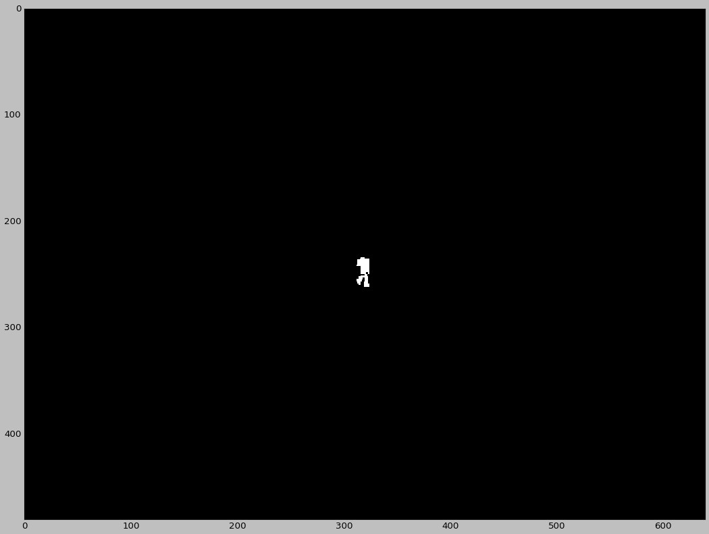
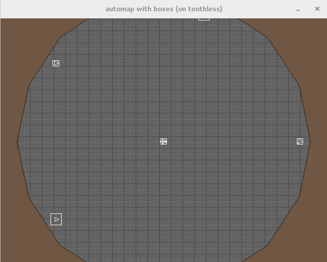

After our midterm meeting, we did some further research into what VizDoom offers. We found two buffers besides the screen buffer and the depth buffer which may prove useful.
Labels Buffer
One difficulty we were running into was that training against the raw depth buffer, we needed some way to screen out walls. The labels buffer provides this - it includes information about which pixels of the depth buffer correspond to which object, along with class and rotation for each object.
This will allow us to train YOLO end to end, as it was meant to be trained.
Below is an example label buffer image.

The automap buffer gives a top down 'mini map' type representation of the game state.
Depending on settings, it can also be set to display all of the objects in the game along with boxes representing their size (this is shown below).
This will be useful for trying to learn a policy directly from the occupancy map, in the event that building from YOLO is unsuccessful.
